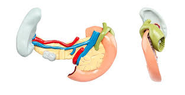

ग्रहणी

ग्रहणी छोटी आन्त्र का लगभग 25 समी लम्बा अपेक्षाकृत कुछ मोटा और अकुण्डलित प्रारम्भिक भाग होता है। इस लेख में मानव शरीर से संबंधित उल्लेख है।
- ग्रहणी आमाशय के पाइलोरस से प्रारम्भ होकर 'सी' की आकृति बनाता हुआ बाईं ओर को मुड़ा रहता है।
- ग्रहणी की भुजाओं के बीच में मीसेन्ट्री द्वारा सधा हुआ गुलाबी सा अग्न्याशय होता है।
- यकृत से पित्तवाहिनी तथा अग्न्याशय में अग्न्याशिक वाहिनी ग्रहणी के निचले भाग में आकर खुलती है। ये क्रमशः पित्तरस तथा अग्न्याशिक रस लाकर ग्रहणी में डालती हैं।
- पीछे की ओर ग्रहणी मध्यान्त्र में खुलती है।